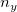
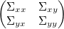
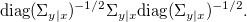
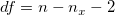
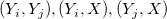
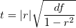

/math-a497642b29af9eda7964583875b85002.png "\Sigma_{y|x} = \Sigma_{yy}-\Sigma_{yx}\Sigma_{xx}^{-1}\Sigma_{xy}")
Der partielle Korrelationskoeffizient wird verwendet, um die Beziehung zwischen zwei Variablen bei Vorhandensein von Kontrollvariablen zu beschreiben.
Für einen Satz von

Zufallsvariablen Y und/math-d037fcd5fa24c8673763af9c9253cdb1.png "n_x") Kontrollvariablen X kombinieren Sie zwei Sätze von Variablen X und Y. Die Varianz-Kovarianz-Matrix kann ausgedrückt werden mit:
Kontrollvariablen X kombinieren Sie zwei Sätze von Variablen X und Y. Die Varianz-Kovarianz-Matrix kann ausgedrückt werden mit:

Die Varianz-Kovarianz-Matrix von Y-Variablen für Kontrollvariablen X ist gegeben mit:
Die Matrix der partiellen Korrelationskoeffizient wird berechnet mit:

Ein t-Test kann verwendet werden, um die Hypothese zu testen, dass ein partieller Korrelationskoeffizient 0 ist.
Die Freiheitsgrade sind:

wobei n die Anzahl der Beobachtungen in der Berechnung der vollen Korrelation ist. Für das paarweise Löschen von fehlenden Werten in der Berechnung der partiellen Korrelation von zwei Variablen /math-cca0d5b689e524b619b30538d3432266.png "Y_i, Y_j") bei gegebenen Kontrollvariablen X, ist n die Mindestanzahl der Beobachtungen in den Paaren von
bei gegebenen Kontrollvariablen X, ist n die Mindestanzahl der Beobachtungen in den Paaren von

und Paaren in X.t-Statistik ist:

wobei r der partielle Korrelationskoeffizient ist.
Das beidseitige Signifikanzniveau /math-550e9bcd0b294b7167dd9b8a1472af23.png "\text{Prob}>|t|") kann berechnet werden mit:
kann berechnet werden mit:
/math-704674c897463ad5d94a0842cbdadd58.png "2(1 - \text{tcdf}(t, df)).")